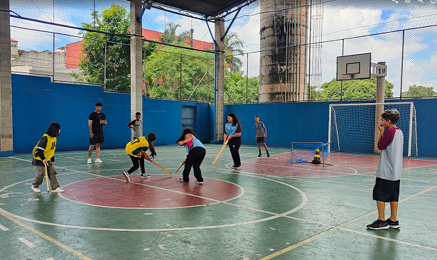

Meus Projetos

AthleTogether – Esporte e Inglês
Projeto interdisciplinar entre Educação Física e Língua Inglesa, com foco em práticas esportivas de países de língua inglesa. Envolve vocabulário específico, dinâmicas esportivas e ações inclusivas com alunos do Ensino Médio.

Robótica Pedagógica com Arduino
Projeto com kits Arduino e materiais recicláveis. Desenvolvido no contexto da Robótica Sustentável, com foco em automação, prototipagem e reaproveitamento de materiais. Voltado ao Ensino Médio.
Atletismo e Tecnologia
Projeto de análise de desempenho em atletismo com sensores, integrado ao currículo de Educação Física, Robótica e Programação. Promove a inclusão de alunos com deficiência e a interdisciplinaridade com Biotecnologia.